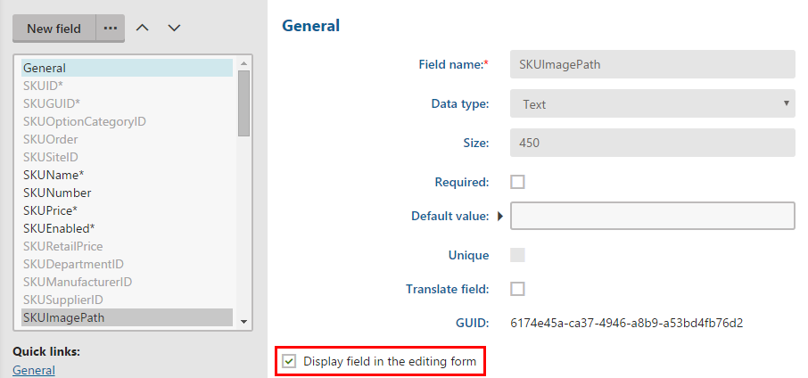

Displaying product variants on MVC sites
If your on-line store contains products with product variants, you will need to display variants on your MVC site among products. Product variants are, in a nutshell, products with pre-defined product options.
Supported functionality
Regarding configurable products, Kentico currently supports only product variants. Product options without created variants are not supported.
However, you can create a product detail page for the product variants' parent with product attribute selectors. That way, you can achieve the similar functionality as with attribute product options. Only in the background, the configurable options are product variants. See Displaying variants with attribute selection to learn more.
To display product variants, use the Kentico.Ecommerce integration package. You can use either the default KenticoVariantRepository class that takes care of working with product variants or your own implementation of the IVariantRepository interface.
Tip: To view the full code of a functional example directly in Visual Studio, download the Kentico MVC solution from GitHub and inspect the LearningKit project. You can also run the Learning Kit website after connecting the project to a Kentico database.
The following process presumes you already have a working product details pages for standard products as described in Displaying product details on MVC sites.
Open your MVC project in Visual Studio.
To your product model, add the following properties and methods. They add a list of all product variants of a specific product and also the currently selected variant.

To your product controller, change the action of displaying pages to fill the product model, and add a method that displays the desired variant.
Add a variant selection to your view.
Adjust the button for adding the product or product variant to the shopping cart.
Add a JavaScript file that dynamically switches between variants (changes the view's content) when the selection changes.
Visitors of your site can now browse and switch among products and product variants.
Changing the product image for different variants
You may find useful to display a different image for every product variant. For example, if you sell T-shirts, you may want to display a red T-shirt when a red variant is selected and a blue T-shirt when a blue variant is selected.
To be able to display a different image for each variant:
Enabling to specify an image path for each variant
Change the default setting of the variant detail layout to include a selector for its image.
Open the Modules application in Kentico.
Edit the E-commerce module.
Switch to the Classes tab.
Edit the SKU class.
Switch to the Alternative forms tab.
Edit the Variant properties form.
Switch to the Fields tab.
Select SKUImagePath in the field panel.
Select the Display field in the editing form check box.

Selecting the Display field in the editing form check boxClick Save.
When you now edit a product variant, you can see a selector for an image. By default, Kentico tries to display an image of the product variant. If the variant does not contain any image, the system uses an image of the variant's parent product.
Displaying product variant images in MVC application
This process assumes your MVC application can display product variants as described above.
Open your MVC project in Visual Studio.
Add a recognizable ID tag to the image in the variant detail's view. If you used the same process as described above, add it to the Detail view.
Add the image to the JavaScript handling changes of the selected variant. When using the process above, change the variant's image in variantSelector.js in the updateVariantSelection method.
var productImage = $("#js-product-image");function updateVariantSelection(variantId) {...productImage.attr("src", data.imagePath);}Add the image path for the specific variant to the response created in the controller. When used the process above, add the path to the response in the Variant method.
Your product detail pages now display a different image for every variant. If the variant does not have any image specified, the system uses the parent product's image.
Displaying variants with attribute selection
If you do not want to display a separate product detail page for every variant, you can use selectors (such as drop-down lists or check boxes) at their parent's detail page.
To choose variants based on attribute selection instead of specific pages:
Create a view model for product option categories (for example, the ProductOptionCategoryViewModel).
The view model should contain information needed to select and display the variant's options.
To your controller action that takes care of displaying the product detail page (the Detail action in the ProductController from the example above), add loading of the variant that you want to display by default (e.g. the cheapest variant) and its product option categories.
When initializing the product view model (ProductViewModel in the example above), add also the default variant and the list of all product option categories. Extend the view model accordingly.Adjust your controller action that takes care of displaying the product variant detail page (the Variant action in the ProductController from the example above).
In the variant's controller action, you can also process the information about the availability of the specific variant.
If you followed the example above, you might need to adjust your JavaScript file that takes care of switching among variants.
Adjust your view that displays product variants (the Detail view in the example above).
If you want to display the default text for drop-down lists (for example, please select) specified in the Default text field when editing the category, access the DefaultText property of the ProductOptionCategory class (in the Kentico.Ecommerce integration package).
Your visitors can now configure product variants with attribute selectors.
You can see a working example on our MVC Dancing Goat sample site.